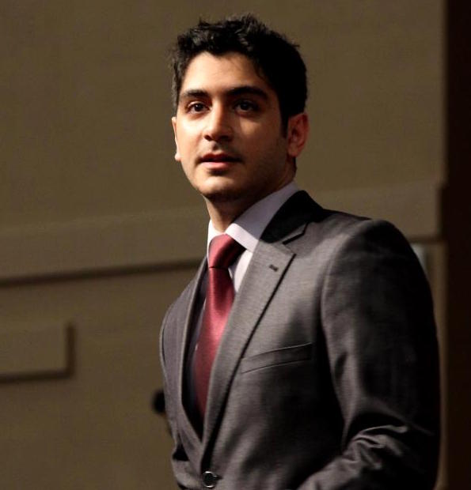

Abdullah Al-Dujaili, Ph.D.
|  |
|
About me
I received the B.Eng. degree in electrical and electronics engineering from Universiti Teknologi PETRONAS, Malaysia, in 2012. I defended my Ph.D. thesis in March 2017, under the supervision of Suresh Sundaram at the School of Computer Engineering, Nanyang Technological University, Singapore. From October 2016 till November 2017 , I was a Data Scientist (Operations Research) at Grab, where I worked on problems of large-scale mobility. From November 2017 to July 2019, I was a Postdoc at the ALFA group, MIT CSAIL, where I worked with Una-May O'Reilly on principled AI approaches to adversarial dynamics and healthcare. Since July 2019, I have been a Research Scientist at the Algorithmic System Group, Analog Garage working on advanced algorithms for signal processing and artificial intelligence and their efficient implementation on hardware.
My journey so far had me spent some time at
Research
My research interests include
Sequential Decision Making (Black-Box, Online, Multi-Objective)
Machine Learning
Parallel Computing / Digital System Design
Computer Vision